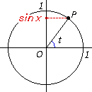

sin t = a
Activity

Sin t is defined as the y-coordinate of the point P on the
unit circle where t is the angle of the radius OP.
Your task is to find the angle that satisfies the equation
sin t = a when a is given
How to use the applet.
The red point is your target and it represents the value of a.
( sin t = a )
First, input an angle between -360 degrees and 360 degrees,
then click "Shot" button or press enter key. The radius will
rotate by the angle you specified and the blue ball will be shot horizontally. If the blue ball
hit the target, the message "You got it!" will appear on the
screen. If you have difficulty to find the angle, click "Hints on"
button. It shows the method to find the angle.
Click "Next" button when you want to try another problem.
Applet